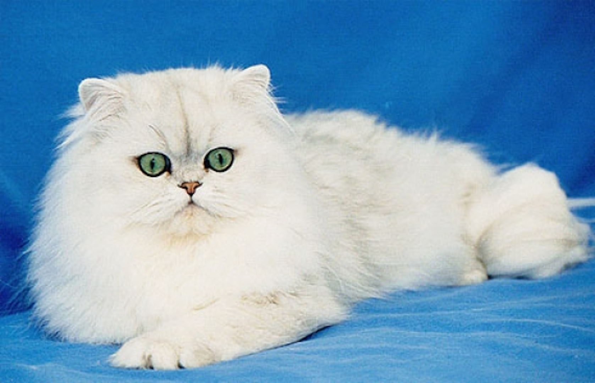
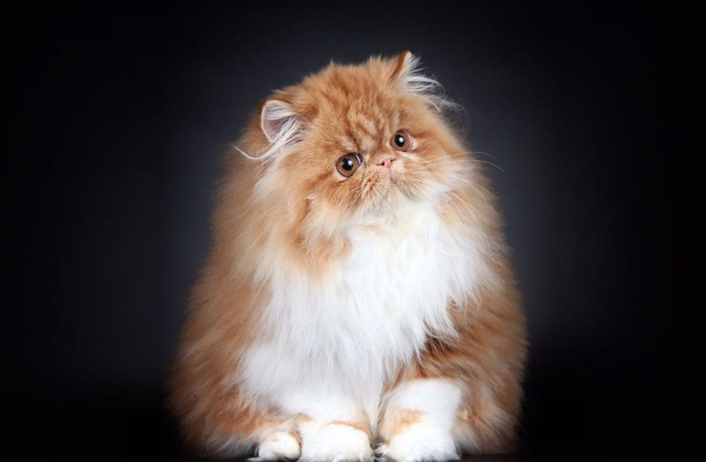
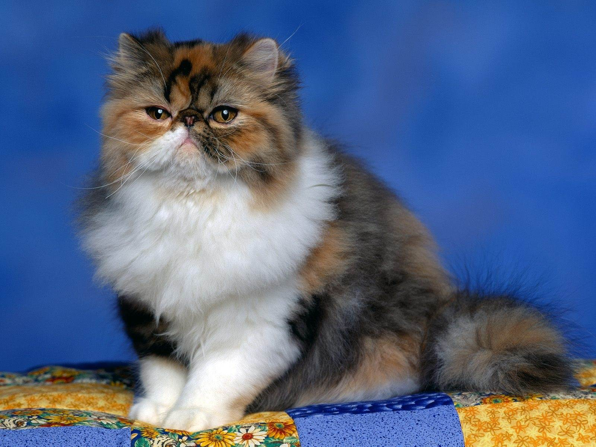

Персидская кошка.

Как выглядит персидская кошка:
- Телосложение. Персидские кошки отличаются мускулистым и крепким телом.
Корпус средних размеров, но мощный, грациозной эту породу точно назвать нельзя.
- Голова. Круглой формы, массивная и пропорциональная. Глаза выразительные,
уши маленькие, широко расставленные и чуть закругленные. Короткая и сильная шея.
- Хвост. Средних размеров и очень пушистый, кончик немного закруглен.
Шерсть длиннее и «послушней», чем на теле, по цвету не отличается от остальной «шубки».
- Конечности. У персов очень крепкие короткие лапки, на которых они забавно, но легко и бесшумно «ковыляют».
Между пальцами растут маленькие пучки шерсти.
- Шерсть. Очень густая и длинная (до 12 см), мягкая и шелковистая.
Бывает трех типов окраса:
- Однотонной

- В два цвета

- В три цвета.

Характер
Персидские кошки отличаются миролюбивым и покорным нравом – идеальные питомцы с приятным и спокойным характером.
Они редко подают голос, а внимания
к себе требуют – настойчиво сидя около хозяина и преданно заглядывая ему в глаза.
Персы очень любят, свернувшись клубочком, спать на коленях и мурлыкать с
умиротворенным видом.
Держать их в доме приятно и удобно.
Другие породы кошек